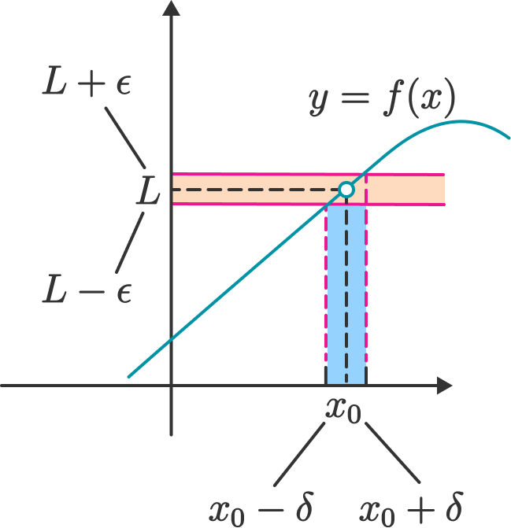
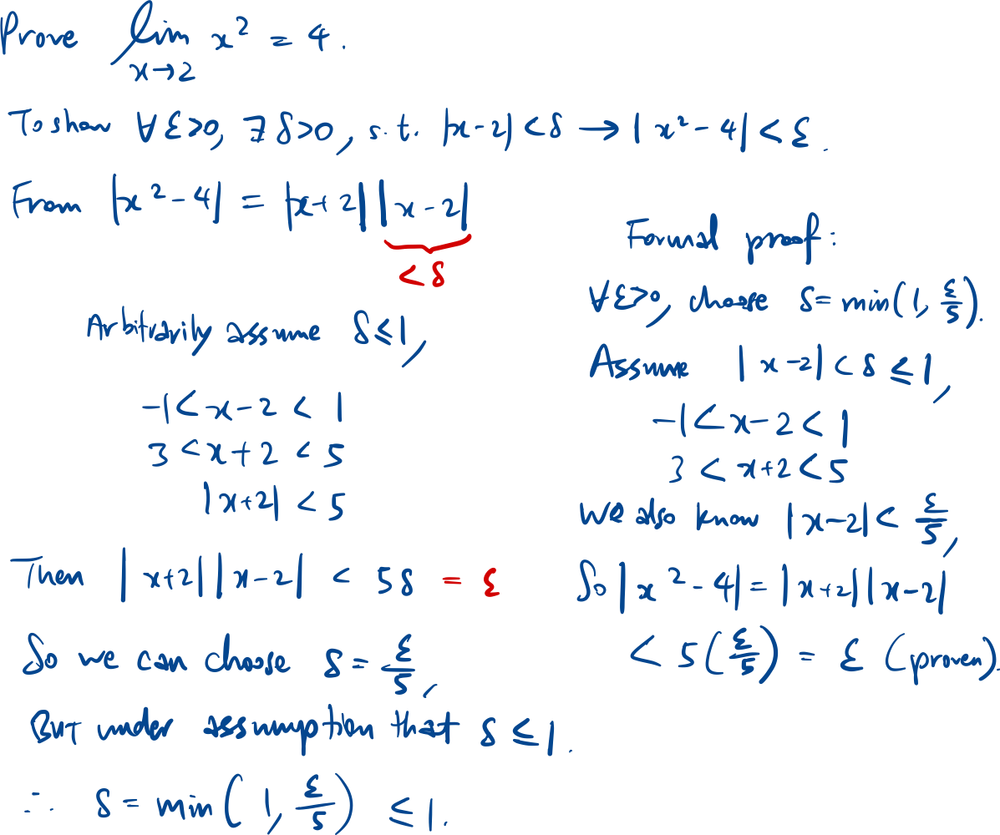
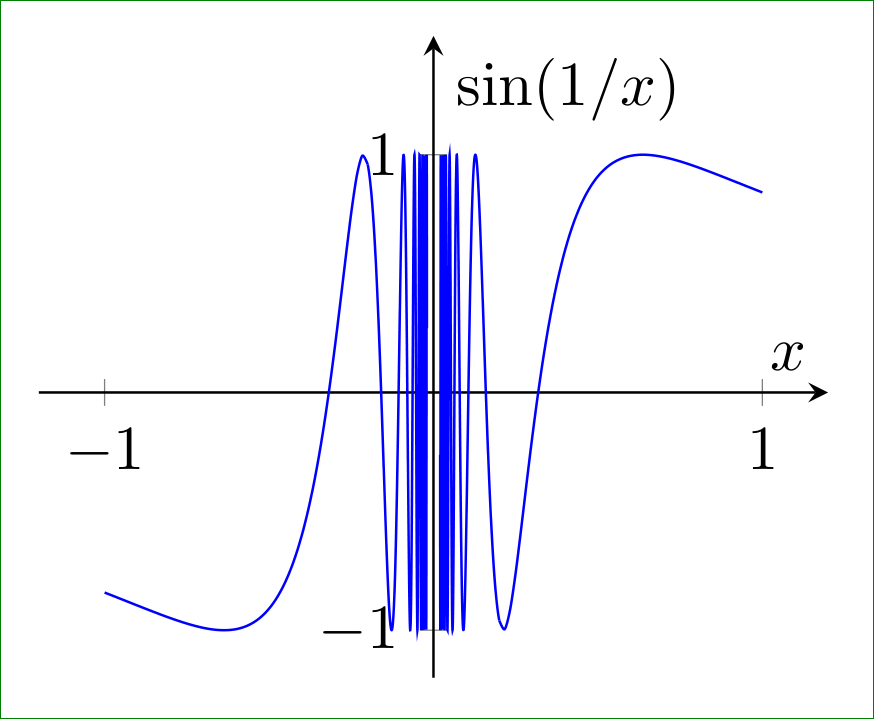
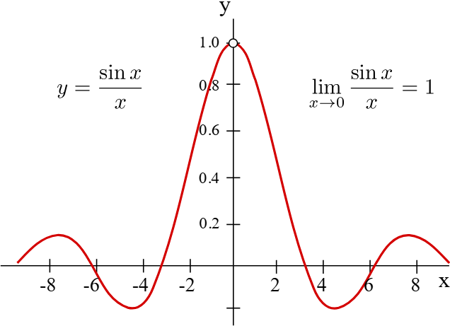
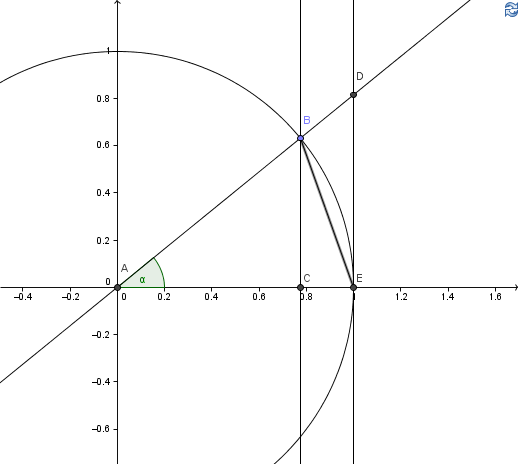
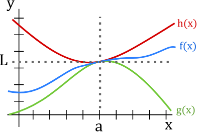

Limit point
a is limit point of set A if:
i.e. there are some x∈A around the limit point a.
Limit of a function

To prove a limit using
epsilon-delta
Technique: Reverse engineer from |f(x) - L| < ϵ.

Limit at infinity
Showing limit d.n.e
Limit tends to infinity
Construction of two
sequences

Left-hand vs right-hand
limit
Asymptotes
Methods to find limits
Limit laws
Limits on RHS should exist for limit law to be applied.
**
If m=0 or both limits don’t exist, we have no conclusion.
**
Continuous
Continuous f(x) at x=a: substitute x=a into equation.
Useful equations

Derivation:

For the above unit circle:
- Triangle inequality
Reverse triangle inequality.
- For large x, factorial > exponential > polynomial >
ln/lg.
Squeeze theorem

If L = 0, we can use squeeze theorem on |f(x)|, and we instantly get
a lower bound of 0.
E.g.
We can guess that L = 0, since h→0 and although sin(1/h) oscillates
near 0, it is still bounded.
Thus
Other tricks
- L’hopital rule
- If there are multiple special functions, use series expansion &
ordo notation